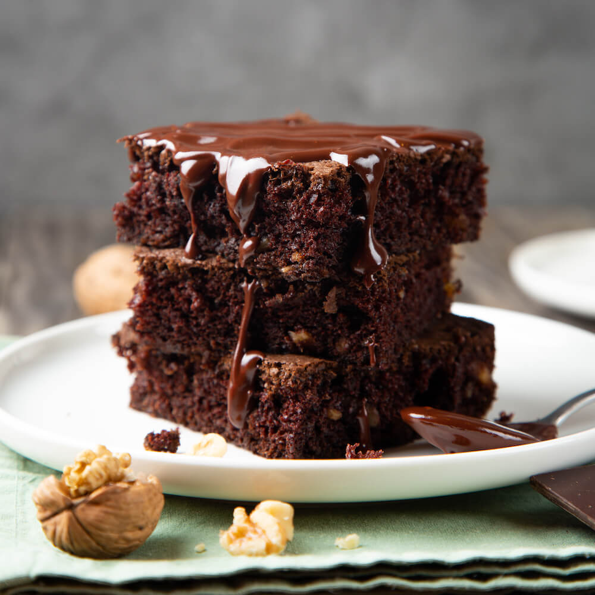

Brownie

Fudgy Bliss in a Pie Dish: Indulge in our Irresistible Brownie Pie
Experience the best of both worlds with our delectable Brownie Pie. This dessert marries the rich, gooey goodness of brownies with the classic charm of a pie. Each slice is a delightful collision of flavors and textures, perfect for satisfying your sweet cravings.
Ingredients
- Pie crust
- Unsweetened chocolate
- Butter
- Sugar
- Eggs
- All-purpose flour
- Cocoa powder
- Salt
- Vanilla extract
- Chocolate chips
Steps
- Preheat your oven and prepare the pie crust in a pie dish.
- Melt unsweetened chocolate and butter together, then stir in sugar until smooth.
- Beat in eggs, one at a time, and add vanilla extract.
- In a separate bowl, mix flour, cocoa powder, and salt.
- Gradually combine the dry ingredients with the chocolate mixture to create a brownie batter.
- If desired, fold in chocolate chips or nuts.
- Pour the brownie batter into the pie crust.
- Bake until the brownie is set and a toothpick comes out with a few moist crumbs.
- Let it cool before serving. Enjoy your Brownie Pie!